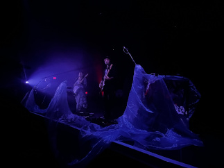

I saw night tapes on october 24th of this year where they performed at the 9:30 club in Washington D.C. Due to their small popularity, I didn't have to line up early to see them. In fact, my sister, my plus one for this event, arrived 15 minutes before doors opened and was able to get barricade. Before I talk about Night Tapes, I want to talk about the opener for this concert, Cult Of Venus, who did an amazing job warming up the crowd for the main show. Her performance started at 7 PM, and it was a stellar performance. The crowd at this point was tiny, as many would arrive later to see the main performers, but no matter how small the audience was, she performed as if millions were watching her.

at 8 PM is when Night Tapes began to play. Liris, the lead singer, has an amazing stage presence as she was always dancing to the music and interacting with the crowd. It was mesmerizing seeing her dance. I fully believe that her energy infected everyone else as we were all dancing along with her. This concert made it on my list of Best experiences due to how angelic their music sounded live. Dream pop has always been one of my favorite genres, and this band does it like no other. It was a breathtaking and captivating performance. It felt intimate as she would not only sing to the crowd but would look at the people on the second level of the Venue and sing to them as well. Everyone in that venue had a proximity to the stage, which made it more special as the band could better interact with the crowd. Liris actually ended the concert by coming into the pit and dancing with fans to their popular song, Forever. It was one of my shortest concerts, ending exactly at 9:30, but even if it ended early, it was still one of my favorite concerts I've ever gone to.
